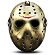

Данный сайт предоставляет небольшую информацию о маньяках, из таких фильмов ужасов как: "Пятница 13-е", "Хеллоуин", "Техасская резня бензопилой", "Кошмар на улице Вязов", и другие...
Также здесь можно узнать: об актёрах, сыгравших маньяков, о компьютерных играх с маньяками, о фильмах ужасов, просмотреть картинки из фильмов ужасов, посмотрить разные видео-ролики из фильмов ужасов и т.д.
Если вы хотите связаться с нами в: VK, Facebook, Twitter; то нажмите вкладку "О нас" и выберете удобный для вас способ.